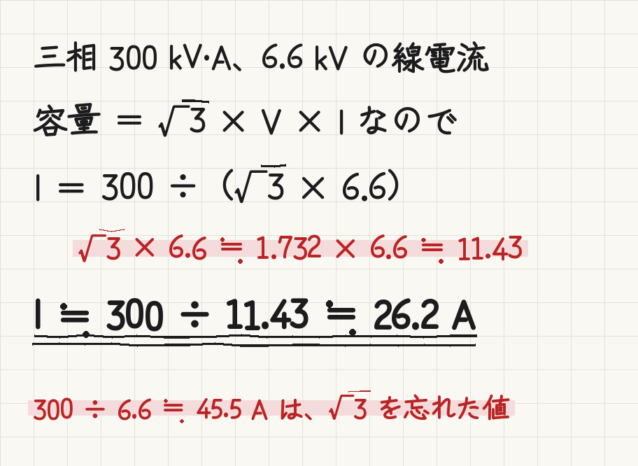

容量から電流を出す：√3 は、どこから来るのか
三相と変圧器の全体像 9章のうち、このページは ② 三相の電力と容量
「300 kV·A、6.6 kV の三相変圧器の定格電流は」という問いで、300 ÷ 6.6 としてしまう。解説には √3 が出てきて、どこから来たのかが書かれていません。
先に答え三相の容量は、√3 × 線間電圧 × 線電流 です。だから、線電流 ＝ 容量 ÷（√3 × 線間電圧）です。単相なら、容量 ÷ 電圧 で合っています。問題の文に「三相」とあれば、√3 を入れます。
どこで止まるか
止まる段立式三相の容量の式（容量 ＝ √3 × 電圧 × 電流）を、電流を求める形に直す1行が省かれがちです。
300 ÷ 6.6 ≒ 45.5 A としてしまう。正しい値の √3 倍（約1.73倍）になります。
式を逆向きに読む
三相の皮相電力（容量）は、線間電圧 V と線電流 I で、次のように書けます。
容量 ＝ √3 × V × I
I ＝ 容量 ÷（√3 × V）
I ＝ 容量 ÷（√3 × V）
√3 は、三相の容量の式に、初めから入っている数です。電流を出すときは、それを割る側に回しているだけです。
| 問題の文 | 電流の出し方 |
|---|---|
| 三相、線間電圧 V | 容量 ÷（√3 × V） |
| 単相、電圧 V | 容量 ÷ V |
| 三相を1相分で解く、相電圧 E | （容量 ÷ 3）÷ E |
3行目は、1行目と同じ値になります。E ＝ V ÷ √3 を入れると、確かめられます。
数値で確かめる
三相、300 kV·A、6.6 kV
I ＝ 300 ÷（√3 × 6.6）≒ 300 ÷ 11.43 ≒ 26.2 A
I ＝ 300 ÷（√3 × 6.6）≒ 300 ÷ 11.43 ≒ 26.2 A
kV·A を kV で割ると、A になります。k どうしが消えるので、単位を直さずに割れます。

確かめの1問
三相、100 kV·A、200 V の変圧器の定格電流は、およそ何 A ですか。
三相、100 kV·A、200 V の変圧器の定格電流は、およそ何 A ですか。
答え
100 kV·A ＝ 100000 V·A。100000 ÷（√3 × 200）≒ 289 A。この計算を順を追って解く本：第3巻の案内
関連するページ：√3 を掛けたうえで、3倍しないのか
最終更新：2026年11月16日